SAFARI
Users
- General & History
- Olive Oil - is your oil a virgin?
- Varieties
- Olive Cures
- Nutrition & Health
General & History
Olives have been cultivated since before the dawn of history and were a critical crop to peoples all around the Mediterranean. Not only did oily olives provide a great deal of food energy, they grow well in soils that won't support most other crops.
They are touchy about climate though, and must have cold nights with warm days in the winter to set flowers. They are also frost tender which further limits where they can be grown. It's a safe bet though that olive trees have been planted in just about every area of the world to which they are suitable.
Unlike other vegetable oils, olive oil can be extracted by moderate pressure at room temperature and without the use of solvents which makes it easily available to peoples with limited technology. For early communities olive oil's importance as a cooking oil was paralleled by its use for illumination as lamp oil, by its medicinal applications and by its use in religious rituals.
One Italian king had millions of olive trees cut down because he felt they made life too easy for the peasants. He felt the natural order of things was for peasants to be poor and have to work hard. The financial impact on his life insurance carrier was immediate and decisive.
Today cured olives are a luxury rather than a survival necessity, but olive oil is still of great economic and culinary importance. Available in the wide range of quality and flavors we associate with wine, it is also a cooking oil that can withstand high temperatures and is resistant to oxidation and rancidity. It is, in fact, the only oil both sides of the fierce coconut oil vs. soy oil battle agree is healthy.
Varieties
There are over 650 varieties of olive grown, and each may be cured in more than one way, which makes for a dizzying selection. Listed here are a few of the more common varieties found in commerce.
Because fresh olives are far too bitter to eat straight off the tree, the examples here are all for cured olives. Countries shown are typical, but olives of the same type and cure can be made in several other countries.
Pictured varieties are ones I've found in my local stores. Our infamous kidney bean in the pictures is there to help you judge the size of the olives.
Agrinion
Greek, large green olives.
Aleppo
Syrian black dry cured olives. Very rare in the North America - and probably pretty rare everywhere now that Syria is in the midst of violent self destruction.
Alphonso
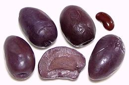 From Chile and/or Peru, fairly large olives cured in salt brine with red wine and/or red wine vinegar which colors them dark purple. They are tart and may have a touch of bitter. 100-200/kg, with 100-130/kg preferred. The photo specimens were typically 1.33 inches long, 0.84 inch diameter and weighed 0.3 ounces each.
subst: kalamata.
Amphissa
A small black olive particularly favored for tapenade spreads, meat stews and red sauces. They are given a natural cure in salt brine.
Arauco
Spanish, larger than regular Spanish olives they are given a fermented lye cure and often packed with rosemary.
Arbequina
Spanish, much smaller than regular spanish olives they have a mild, slightly smoky flavor. Packed seed-in and used in oil production.
Ascolano Olive
An olive grown in California used both as a table olive, either green or black, and sometimes for oil. it is slightly smaller than the Sevillano.
Atalanta
Greek, with a muddy-green color and soft flesh.
Atlas Olive
These are the largest size of the Greek Halkidiki olives.
Beldi
From Morocco, these medium size green olives are given a Fermented Lye Cure so are similar to Spanish olives. The flesh is fairly crisp.
Bella di Cerignola
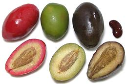 Italian, very large meaty olives cured either green or ripe, in which case they can be cured out with a red color making for an attractive red / green mix. They are also made in a deep black color. They are in demand for appetizers and tend to be expensive. These olives are given a 10 hour lye soak, then fermented in 9% brine for a minimum of 4 weeks. The difference in color is from processing. The red are dyed with Red Dye #3, the green aren't dyed and the black are treated with bubbling air and ferrous gluconate, the same as California Mission olives. The black are usually sold separate from the mixed green and red. The largest of the blacks was 2.83 inches long and 1.03 inches diameter, the red 1.56 inches long by 0.95 inch diameter, the green 1.30 inches long, 0.90 inch diameter. These olives are sized GGG (21-80/kg), GG (81-90/kg) and G (91-120/kg).
Black Olives
Tree ripened olives picked after they turn black, except California canned mission olives which are picked green ripe and colored black by processing. American recipes calling for black olives presume canned mission olives, but all European, Near Eastern and North African recipes presume black dry cured or natural cured olives which have a far more intense flavor.
California Olives
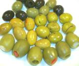 The first olive trees planted in California were brought by missionaries from Spain, the so called Mission Olive. The plan was to create an olive oil industry, but it couldn't compete with cheap imported oil and the orchards didn't become economically viable until invention of the "green ripe" lye cure canning process.
In recent times many other olive varieties have been planted, and, as with California wine, boutique growers have developed cures similar to and fully competitive with the best imported products. The photo shows large "estate grown" cocktail olives stuffed with pimiento, garlic and jalapeno peppers, Mediterranean style cracked olives cured with red chili on the left and zatar (thyme) on the right, and black and green salad olives in the back.
California also produces olive oils that stand head-to-head with the
very best Italy offers. Pricing varies widely with grower and can get
absurd if some popular food pundit has just declared California oils
"the best there is".
Castelvetrano Olive
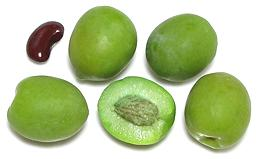 From Sicily, these olives are lye cured like canned California Mission olives, but without the treatment to turn them black. This process is responsible for the rather lurid green color. Put up in jars rather than cans, and without the ferrous gluconate, they have a similar but more pleasant flavor than the Mission olives, and they are a little saltier. Because they are low in salt, the same warnings apply - once opened, eat them within the day or refrigerate. These are for eating, not cooking and will not work in European, Near Eastern or North African recipes. Typically 0.80 inch diameter, the photo specimens were purchased from an import emporium in Los Angeles.
Chinese Black Olive
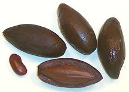 [Wu lan; Canarium pimela syn. C. tramdenum]
This fruit is preserved in brine and used similarly to black ripe
Oleaceae olives but is not really an olive at all. It is the fruit of
a large resinous tree, related to the frankinsense tree, native to
Southeast Asia and southern China. The flesh is
relatively thin and the seed large and sharply pointed at both ends. Aside
from the brined fruit, the seed kernels inside the pits of this and
related species are sold as Canarium nut, Pili nut or Galip nut. The
photo specimens were purchased from a large Asian market in Los Angeles,
packed in brine.
Chinese White Olive
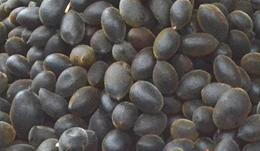 [Nam liap, Samo chin, Kana (Thai); kan-lan (China); buah cana (Malay); Canarium album]
This olive shaped fruit is used similarly to Oleaceae olives but is
not really an olive at all. It is the fruit of a large resinous tree,
related to the frankinsense tree, native to Southeast Asia and southern
China. Why it is called "white" is unknown to me. The fruits are used in
cooking both fresh, where they are somewhat resinous, and preserved by
soaking in brine and drying. They are particularly popular in Thailand and
Vietnam. This fruit is also used in Asian herbal medicines and cosmetics.
Photo by Takeaway distributed under license Creative Commons
Attribution-Share Alike v3.0 unported.
Coquillos
- see Niçoise.Calmata
- see Kalamata.Cerignola
- see Bella di Cerignola.Empeltre
Spanish black midsize olive generally used for oil, but they are also cured and soaked in sherry for use as appetizers.
Gaeta
Italian small black olives - natural cured in salt brine or dry salt cured and rubbed with oil, in which case they will be wrinkled. Mild in flavor, they are often packed with rosemary or other herbs.
Greek Olives - Green & Black
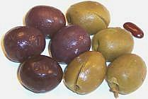 Generally large green or black olives given a natural cure. Shown are cracked green cured with herbs and black ripe.
Subst: for black, Kalamata.
Greek Dry
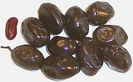 Greek salt/oil cured olives. Wrinkled in appearance, they are an excellent olive for cooking - particularly good in pasta sauces and with meat. The examples here were actually made in Turkey, a major source of fine olives, and are excellent for just eating too.
Green Olives
These are olives picked before they are ripe and cured in various ways. The common supermarket green olive in jars, seed-in or stuffed, is the Spanish Manzanilla and the larger ones are commonly Sevillano. Fresh picked green olives are often available in ethnic markets in California for those who wish to cure their own olives.Halkidiki Olive / Chalkidiki Olive
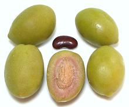 From the Greek region of Macedonia, this very large olive is normally given a Fermented Lye Cure. These are often pitted and stuffed. A smaller amount are given a cure in salt brine with citric and ascorbic acid for about 3 months. This gives a very different flavor. The photo specimens were typically 1.56 inch diameter and weighed 5/8 ounce. They were purchased from Trader Joes for 2016 US $2.29 for 9.88 ounces drained weight. Flavor and texture were very good.
Hojiblanca
A Spanish olive very similar to the Manzanilla but it has a firmer textured flesh and the color is a deeper green.
Hondroelia
Greek olives, tan color and fairly large and meaty, they are given a natural brine cure for up to a year.
Kalamata
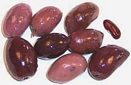 Greek purple-black olives with intense flavor and generally fairly salty. These almond shaped olives are harvested fully ripe and given a natural cure in salt brine and red wine vinegar, then packed pit-in.
Koura Olive
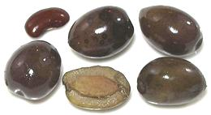 From the Koura district of Lebanon, these are very highly regarded by the people of the Levant. They are primarily used for olive oil, but also given a natural salt and oil cure for eating. They are medium firm, very oily with a slight bitterness. They are salty, but edible without soaking. Typically 0.68 inch diameter, 300/kg.
Liguria
Italian small black olives. These are given a natural cure in salt brine and packed pit-in and sometimes with stems on. They are similar to the French.
Lucques
French, an elongated, crescent shaped green olive with a pointy end, These are much favored by French gourmets who say the taste reminds them of almond and avocado. They are given a unique cure, soaked for about 12 hours in lye, water soaked to remove the lye and then fermented under refrigeration for about one month. 220-340/kg with larger preferred.
Lugano
Italian black olives which are given a natural cure or a and are commonly very salty. They are packed pit-in and sometimes with olive leaves.
Manzanilla
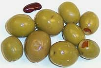 Spanish green olives that are also grown in California. They are commonly given a fermented lye cure, then packed in a brine of salt and lactic acid. Sold unpitted and/or pitted and stuffed in various sizes, 200-320/kg. I have found Spanish manzanilla olives marketed under the Goya label excellent in flavor and texture.
Manzanilla Perdigon
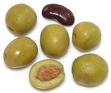 This is the smallest size of Spanish Manzanilla Olives, 340-400/kgm. They are given the typical Spanish fermented lye cure and are always sold with the pits in. The photo specimens, typically 0.50 inch diameter, were purchased for 2016 US $2.29 for 21 ounces drained weight.
Mission Olive
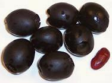 This is the infamous California canned olive (usually black but sometimes green, usually pitted but sometimes not). The trees, similar to Manzanilla, were brought to California by Spanish missionaries in the 1700s in hopes of building an olive oil industry. That plan failed because it couldn't compete with cheap imported oil and the plantings didn't become economically successful until invention of the "green ripe" canning process in the 19th century.
Use these in American recipes but never European, Near Eastern or
North African, where something more flavorful like
Greek Dry is expected.
Caution: with little salt or acid these can't be left out
long. After opening refrigerate, preferably in their original brine.
Eating spoiled ones provides an experience you won't forget.
Moroccan oil-cured
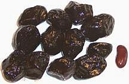 North African small black olives given a salt/oil cure. Smaller than the Greek Dry, they are slightly bitter and used mainly for cooking.
Moulin de Daudet
French olives, both black and green. They are given a natural cure and often packed with herbs.
Nafplion
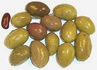 Greek medium size green olives cracked and given a natural brine cure. Usually pit-in, often stem-on and often with herbs. They are fairly salty general purpose snack olives.
Niçoise
Niçoise-Coquillos
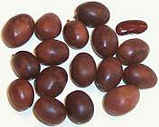 French red-brown olives, tiny but tasty. Niçoise-Coquillos is the same olive but grown in Spain or Italy, generally for shipment to French processors. These small olives are harvested fully ripe and given a natural cure after which they are packed, pit-in, often stems-on, and often with herbs.
Nyons
French small black olives first given a natural dry salt cure and then brined. Frequently flavored with thyme and/or rosemary. sub: Moroccan Oil Cured or Greek Dry (larger).
Picholine
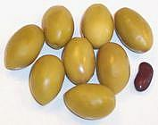 French green olives, small and pointy. They're given a natural cure in a salt brine and sometimes packed with citric acid as a preservative. Often salty but tasty and a good snack olive.
Ponentine
Italian black olives, Generally given a natural cure in salt brine and packed in a vinegar pickle. Relatively mild in flavor.
Provençal
French olives, usually black but sometimes green, first cracked, then given a natural dry cure flavored with herbs.
Queen Olive
- see Sevillano.Royal Olive
(Victoria, Royal Greek)Greek, large brown olives given a natural cure in salt brine.
Salad Olives
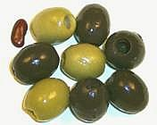 Commonly canned black but sometimes green pitted olives, though some so called may be green in jars and even pimiento stuffed. If so they are generally small and sloppily stuffed. Most common in cans is the California Mission Olive with a lye cure. Green ones from Spain may have a fermented lye cure. These are very mild olives and must be refrigerated once the can is opened (preferably in the original brine) to avoid an unforgettable experience.
Seracena
Italian black olive, primarily used for oil but sometimes given a natural cure for eating.
Sevillano
- [Queen Olive]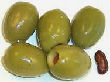 Spanish green olives quite a bit larger than the common Manzanilla, but given a similar fermented lye cure. They are often stuffed for use as cocktail olives and are also grown in California as table olives. 70-180/kg with 70-100/kg preferred. Smaller sizes of Sevillano are called "Azofairon".
Sicilian
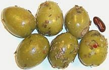
Italian large green olives. They are given a natural
cure in salt brine and are often marinated with herbs. They may be pitted
and stuffed for use as cocktail olives.
Spanish Olives
Various olives from Spain and California, most commonly Manzanilla.
Taggiasca Olive
Liguria Cured in sea salt brine for up to 5 months. Blonde to deep red and purple. very small 500-600/kg with thin flesh. firm, sweet, fruity.
Toscanelle
Italian small black olives often given a natural dry cure.
Curing Olives
Home Cured
olives are generally black ripe or turning black and processed with lye. They are first soaked in a strong lye solution for several days, breaking an olive open occasionally to see if the lye has penetrated to the pit. When it has, they are soaked in several changes of salt brine until the lye has been leeched out. They are finally put up in jars in a strong salt brine. For use, they may require a soak in cold water to leech out some of the salt.Lye Cured
commercial canned olives are processed similar to the Home Cure. All the olives are picked green or nearly so, even those that will end up as black olives (to produce a firmer black olive). First they are soaked in a lye solution long enough to penetrate to the pits. For black olives air is bubbled through this solution causing the olives to darken. The final brine for black olives includes ferrous gluconate to intensify the black color. After canning, both black and green are pasteurized with steam. Canning and pasteurization allows a much less salty product than the home cured, or most other cures for that matter.Fermented Lye Cure
is generally used in Spain. Green olives are soaked in lye similar to the Home Cure but the brine soak stage lasts for about three months during which the olives ferment somewhat, giving them that unique Spanish flavor. They are then bottled and pasteureized with steam.Dry Salt Cure
results in soft chewy olives with a wrinkled appearance. The olives are first lightly crushed so the salt will penetrate, then layered in salt for about four weeks. When done they are rinsed with cold water and dried. Finally they are coated with olive oil after which they may be pasteurized. This cure is used for Dry Greek, Italian Gaeta and other Mediterranean olives.Natural Cures
are used for a number of Mediterranean olive varieties. One method is to soak the olives in cold water that is changed daily until the bitterness is leached out, after which they are cured in a salt brine for several months. A method used for Sicilian olives is to soak in a brine of salt and lactic acid for about a year. Kalmata, Amphissa, Nicoise, Picholine, Cerignola and Gaeta olives are generally soaked in a salt brine for about a year.Health Considerations
Warning: low salt olives such as lye cured Mission olives and many salad and cocktail olives will spoil once opened. They should be eaten within the day or refrigerated and eaten within a couple of days. Eating spoiled ones will provide you with an experience you will not forget. High salt dry and naturally cured olives do not present this danger.
Olives are high in oil, 13% or higher depending on type and cure, so they are higher in calories per ounce than most fruit. They are low in carbohydrates, typically less than 6%.
Today, olive fruit is a luxury item and eaten in relatively small quantity, but olive oil is of great culinary and health importance. Since the oil is the dominant aspect of the fruit anyway, we refer you to our Oils and Health article for the details.